Eventos
Tierralta, Córdoba, es un municipio lleno de vida y celebración, donde los eventos culturales, festivales y actividades comunitarias reflejan la alegría, identidad y tradición de su gente.
A lo largo del año, locales y visitantes pueden disfrutar de una variedad programación que incluye música, danza, gastronomía, deporte y espacios de integración social, todos eventos no solo fortalecen la cultura del Alto Sinú, sino que también promueven el turismo y el desarrollo comunitario.
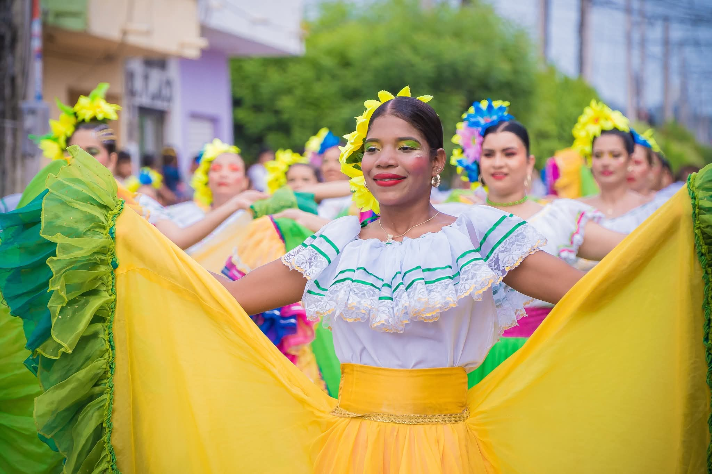
Festivales
Experimenta la energía de corralejas, comparsas y folclórico vivo que llenan las calles de Tierralta de color, música y orgullo comunitario.
Explora →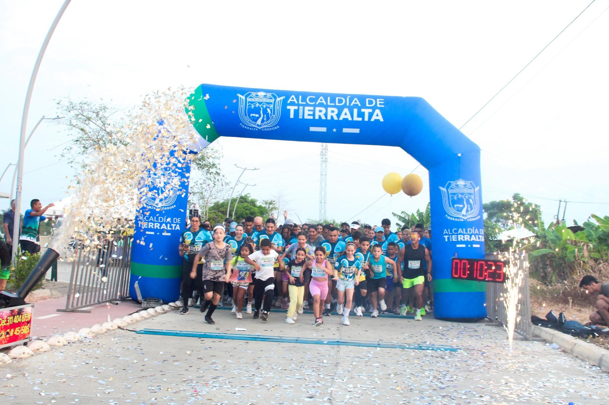
Eventos comunitarios
Conciertos gratuitos, talleres en la biblioteca, concursos gastronómicos y más, eventos que unen y celebran al pueblo de Tierralta durante todo el año.
Explora →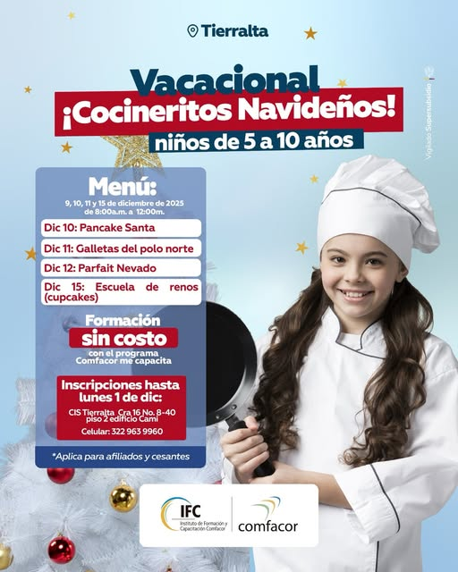
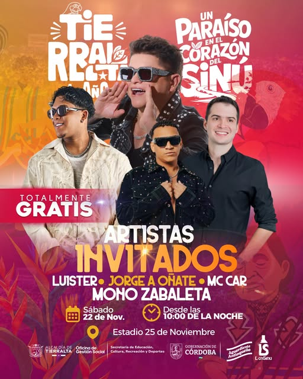
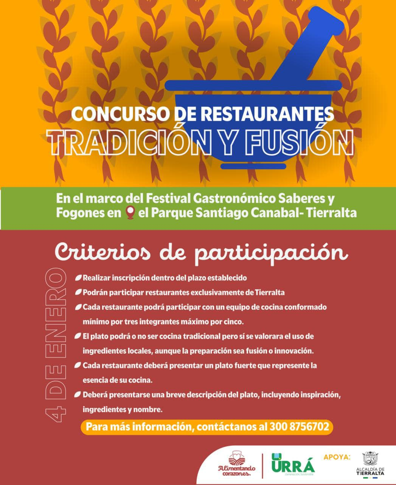
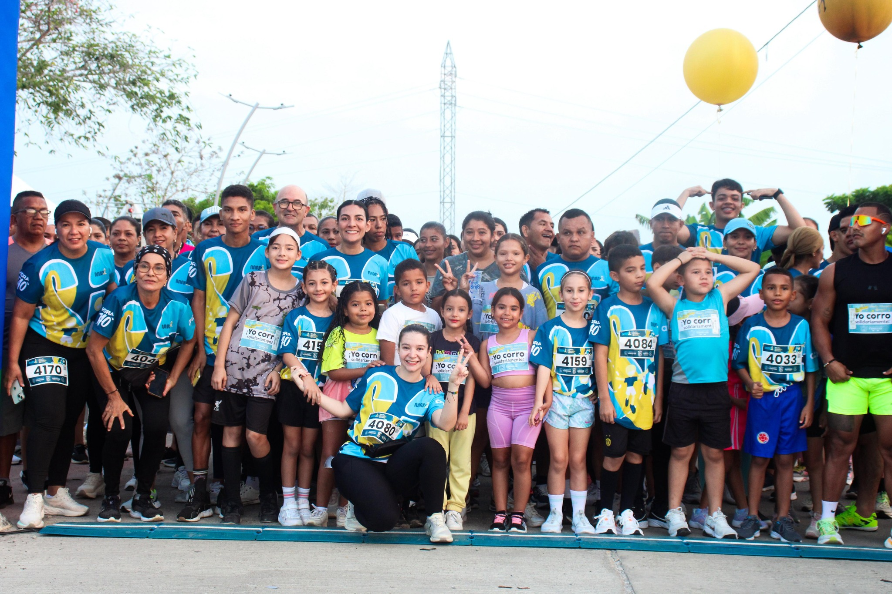
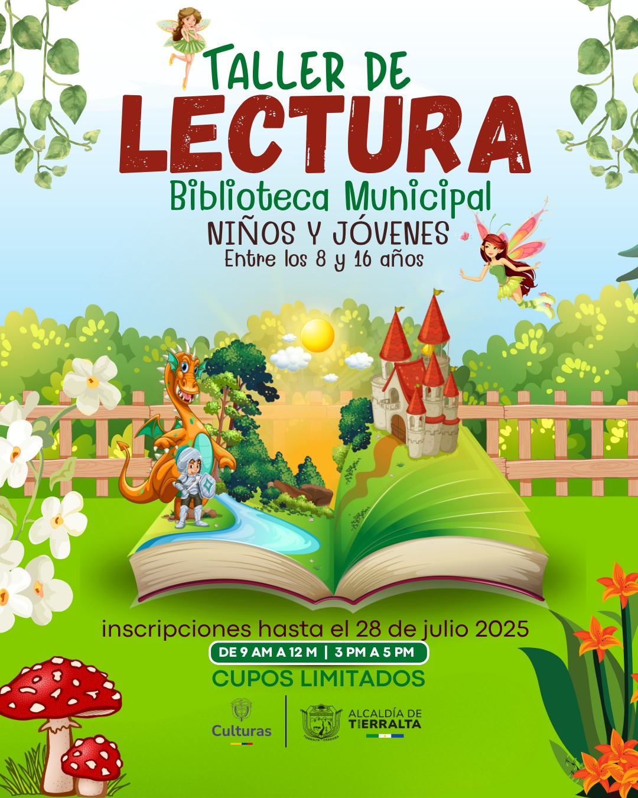
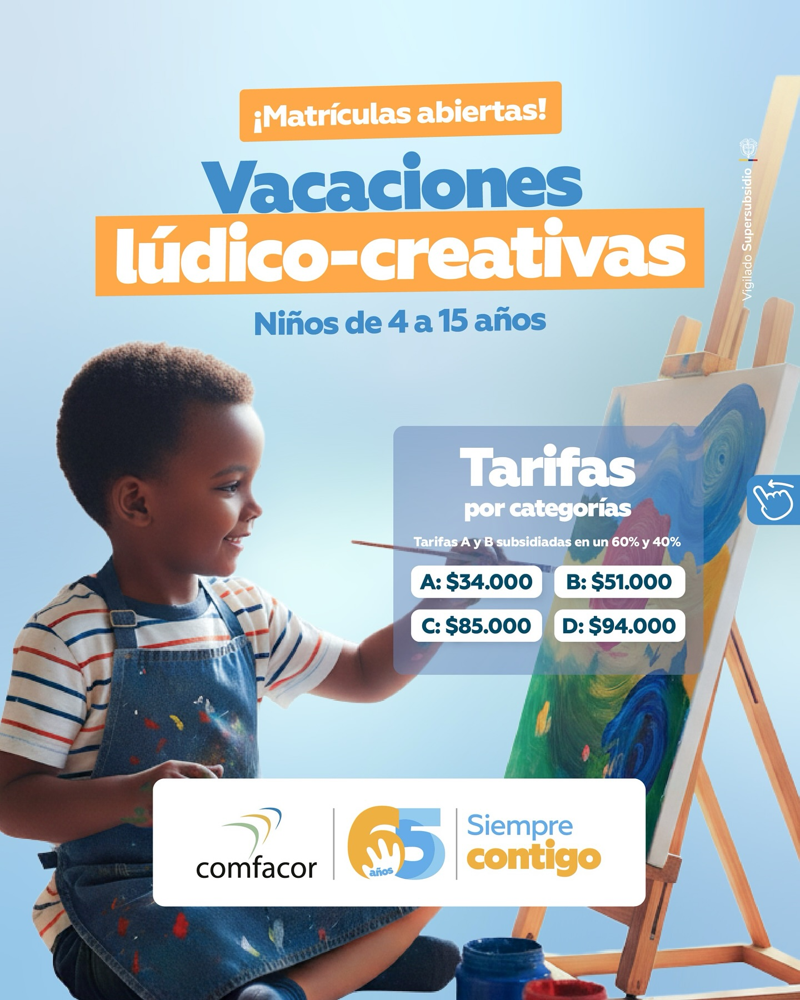
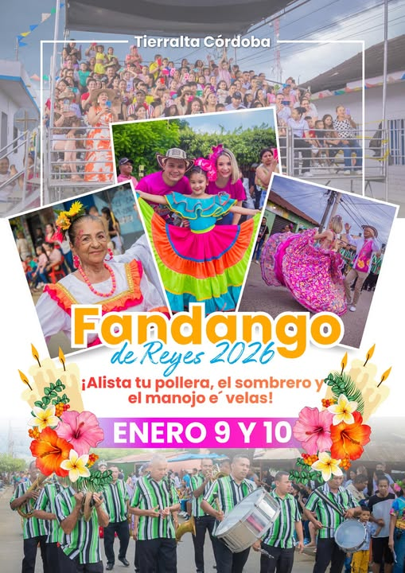
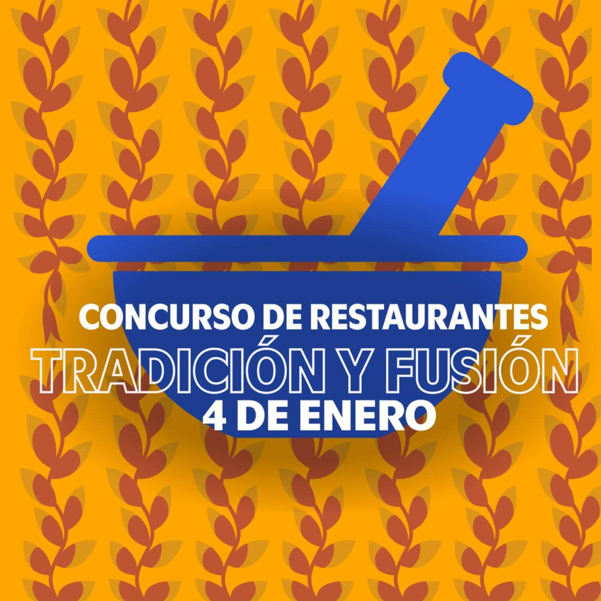
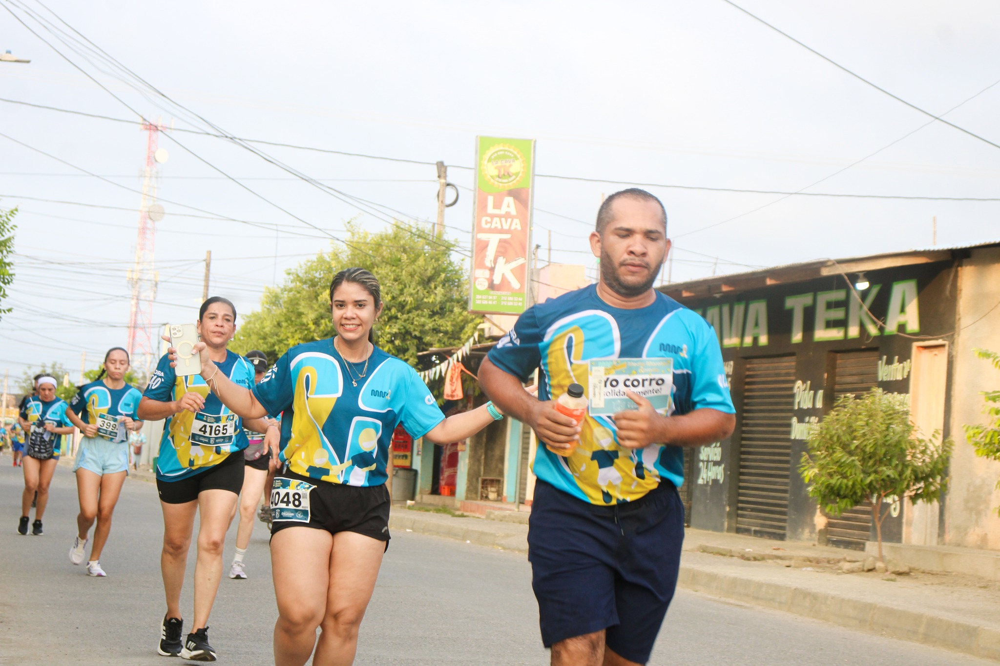
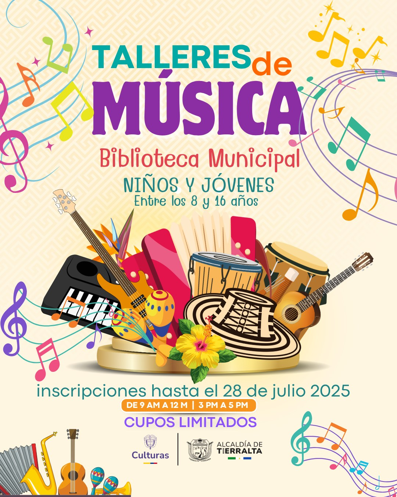
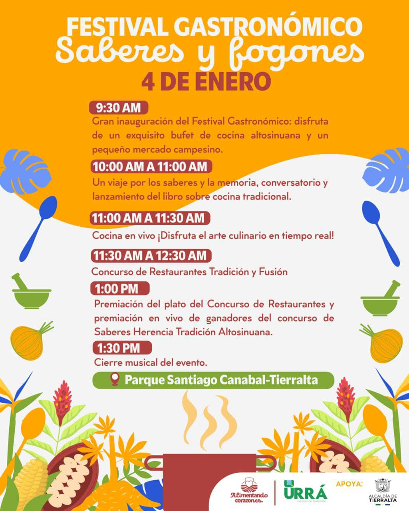
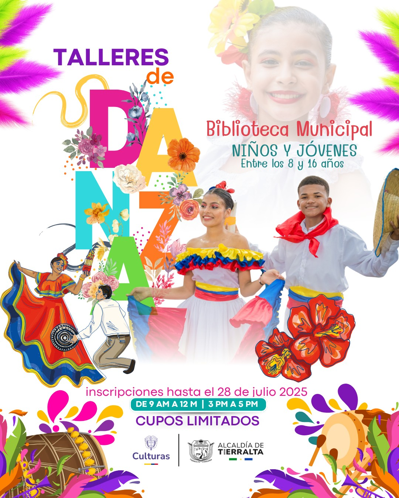